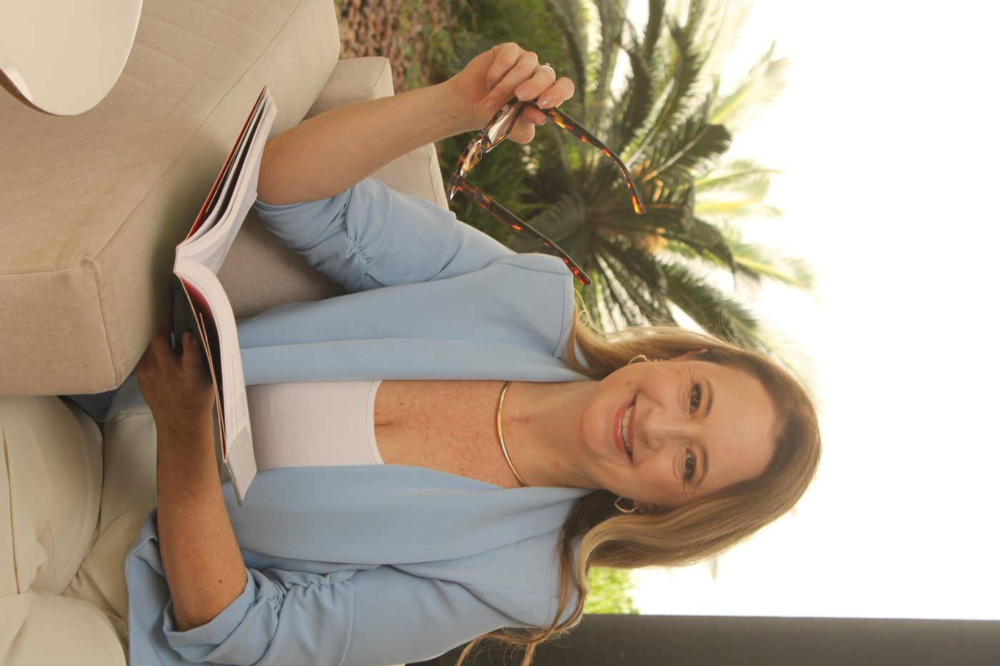

Sobre mim
Não apaguei nada. Fui aprendendo a carregar — e depois a transformar. É isso que trago para cada sessão: não respostas prontas, mas presença real.
Telma Palma · Psicóloga Clínica · CRP 06/216142 · TCC
O que guia o meu trabalho
Todo mundo faz mais sentido quando você conhece a história dele. Aqui, você é ouvida do início ao fim — sem pressa, sem rótulos.
O que acontece no consultório, fica no consultório. Um espaço seguro só funciona quando você sabe que pode ser inteira.
Entender não é o mesmo que mudar. O trabalho terapêutico é atravessar — com apoio, no seu ritmo, um passinho por vez.
Minha história
Houve um momento em que precisei escolher entre o caminho conhecido e o caminho certo. Escolhi o propósito — e todo dia agradeço por ter ignorado a voz que dizia que era tarde demais.
Já me perguntei se era tarde demais. Hoje sei que não era. E sei que você também pode estar nesse momento de dúvida — e que ele não dura para sempre.
Sou psicóloga — e ainda preciso questionar minha própria cabeça, todo dia. Não sou invencível. Tenho medos, inseguranças, dias difíceis. O que a terapia me ensinou não foi a não sentir: foi a observar sem ser arrastada.
Você é o céu. Os pensamentos são as nuvens. O céu é vasto, calmo, permanente. As nuvens são passageiras.
Às vezes a sessão acaba e eu fico sentada em silêncio por alguns minutos. Me emociono de verdade. Comemoro cada avanço dos meus pacientes como se fosse meu. Rio com eles também — porque consultório não é lugar só de lágrimas.
Minha vida pessoal e profissional se misturaram de um jeito que eu não esperava. E não me arrependo.
Psicóloga Clínica com registro CRP 06/216142, com formação em Terapia Cognitivo-Comportamental (TCC). A TCC é uma abordagem baseada em evidências que trabalha a relação entre pensamentos, emoções e comportamentos — ajudando a identificar padrões que já não servem e a construir outros que fazem sentido para a sua vida.
Coisas que ninguém sabe sobre mim
Preciso entender antes de opinar. Não consigo mais de outro jeito.
Enxergo o mundo e as pessoas de forma diferente. E isso é mágico.
Aprendi que toda pessoa faz mais sentido quando você conhece a história dela.
Não sou perfeita. Tenho medos, me questiono, choro e vibro igual a você. Mas todo dia escolho estar aqui.
Próximo passo
Agendar é simples. Uma mensagem pelo WhatsApp já é o primeiro passo.
Agendar Consulta